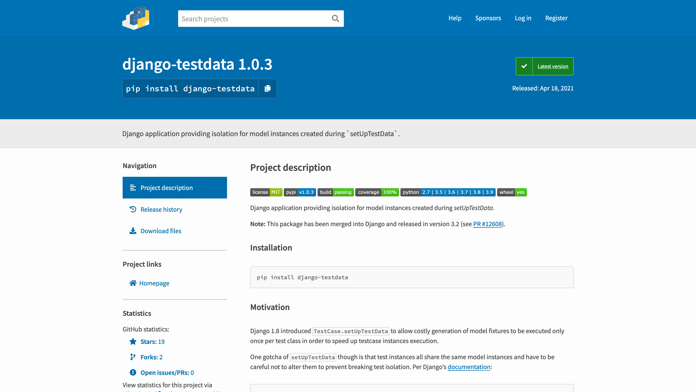

setUpTestData()setUp* & tearDown* methodssetUpTestData()setUpTestData() isolationTestCase to use setUpTestData()33% off during Djangocon Europe
setUp* & tearDown* methods🧪 Per-test: setUp(), tearDown()
📦 Per-TestCase: setUpClass(), tearDownClass()
🔍 por exemplo:
class MyTests(TestCase):
@classmethod
def setUpClass(cls):
super().setUpClass()
cls.conn = acme.connect()
@classmethod
def tearDownClass(cls):
cls.conn.close()
super().tearDownClass()
def setUp(self):
super().setUp()
self.user = make_user(self.conn)
def tearDown(self):
self.user.delete()
super().tearDown()
💪 Robust use:
class MyTests(TestCase):
def setUp(self):
super().setUp()
self.user = make_user(self.conn)
def tearDown(self):
if hasattr(self, "user"):
self.user.delete()
super().tearDown()
💡 ...or:
🧪 self.addCleanup(func)
📦 cls.addClassCleanup(func) - Python 3.8+
✍️Terse & 💪 Robust:
class MyTests(TestCase):
@classmethod
def setUpClass(cls):
super().setUpClass()
cls.conn = acme.connect()
self.addClassCleanup(cls.conn.close)
def setUp(self):
super().setUp()
self.user = make_user(self.conn)
self.addCleanup(self.user.delete)
TestCase lifecyclesetUpClass()setUp()tearDown()addCleanup() functionstearDownClass()addClassCleanup() functions
unittest.TestCase
⬇️
SimpleTestCase
⬇️
TransactionTestCase
⬇️
TestCase
(⬇️)
(LiveServerTestCase)
SimpleTestCasesetUp()TransactionTestCaseTestCasesetUpClass() calls ✨setUpTestData()✨TestCase lifecyclesetUpClass(): tx beginsetUpClass(): setUpTestData()_pre_setup(): tx begin_post_teardown(): tx rollbacktearDownClass(): tx rollbacksetUpTestData()✨setUpTestData()setUpClass()@classmethodsuper()🥚 Before:
class MyTests(TestCase):
def setUp(self):
self.book = Book.objects.create(title="1984")
...
🐓 After:
class MyTests(TestCase):
@classmethod
def setUpTestData(cls):
cls.book = Book.objects.create(title="1984")
...
setUp(): N timessetUpTestData(): ✨once✨setUpTestData() isolation📚 Take these tests:
class MyTests(TestCase):
@classmethod
def setUpTestData(cls):
cls.book = Book.objects.create(title="Meditations")
def test_that_changes_title(self):
self.book.title = "Antifragile"
def test_that_reads_title_from_db(self):
db_title = Book.objects.get().title
assert db_title == "Meditations"
def test_that_reads_in_memory_title(self):
assert self.book.title == "Meditations"
⚠️ Django < 3.2 ⚠️
$ ./manage.py test example.core.tests
Creating test database for alias 'default'...
System check identified no issues (0 silenced).
.F.
======================================================================
FAIL: test_that_reads_in_memory_title (example.core.tests.MyTests)
----------------------------------------------------------------------
Traceback (most recent call last):
File "/.../example/core/tests.py", line 19, in test_that_reads_in_memory_title
assert self.book.title == "Meditations"
AssertionError
----------------------------------------------------------------------
Ran 3 tests in 0.002s
FAILED (failures=1)
Destroying test database for alias 'default'...
👉 django-testdata: automatic per-test copying
from testdata import wrap_testdata
class MyTests(TestCase):
@classmethod
@wrap_testdata
def setUpTestData(cls):
cls.book = Book.objects.create(title="Meditations")
...
🕊 django-testdata merged in Django 3.2 🕊
class MyTests(TestCase):
@classmethod
def setUpTestData(cls):
cls.book = Book.objects.create(title="Meditations")
...
Thanks Simon Charette! 👍
TestCase to use setUpTestData()🍀 Four steps
✍️ Blog post: How to convert a TestCase from setUp() to setUpTestData()
🔁 Repeat across code base for great gains
🔍 por exemplo:
class IndexTests(TestCase):
def setUp(self):
self.book = Book.objects.create(title="1984")
self.user = User.objects.create_user(
username="tester",
email="test@example.com",
)
self.client.force_login(self.user)
def test_one(self):
...
def test_two(self):
...
0️⃣ Install django-testdata on Django < 3.2
1️⃣ Run the target test case
$ ./manage.py test --keepdb example.core.tests.IndexTests
Using existing test database for alias 'default'...
System check identified no issues (0 silenced).
..
-------------------------------------------------------------
Ran 2 tests in 0.015s
OK
Preserving test database for alias 'default'...
✅✅
2️⃣ Add a stub setUpTestData()
class IndexTests(TestCase):
+ @classmethod
+ def setUpTestData(cls):
+
def setUp(self):
self.book = Book.objects.create(title="1984")
self.user = User.objects.create_user(
2️⃣ ...on Django < 3.2:
+from testdata import wrap_testdata
from example.core.models import Book
class IndexTests(TestCase):
+ @classmethod
+ @wrap_testdata
+ def setUpTestData(cls):
+
def setUp(self):
self.book = Book.objects.create(title="1984")
self.user = User.objects.create_user(
3️⃣ Move data creation
class IndexTests(TestCase):
@classmethod
def setUpTestData(cls):
+ cls.book = Book.objects.create(title="1984")
+ cls.user = User.objects.create_user(
+ username="tester",
+ email="test@example.com",
+ )
def setUp(self):
- self.book = Book.objects.create(title="1984")
- self.user = User.objects.create_user(
- username="tester", email="test@example.com"
- )
self.client.force_login(self.user)
def test_one(self):
3️⃣ Move data creation
class IndexTests(TestCase):
@classmethod
def setUpTestData(cls):
cls.book = Book.objects.create(title="1984")
cls.user = User.objects.create_user(
username="tester",
email="test@example.com",
)
def setUp(self):
self.client.force_login(self.user)
def test_one(self):
...
def test_two(self):
...
4️⃣ Re-run tests
$ ./manage.py test --keepdb example.core.tests.IndexTests
Using existing test database for alias 'default'...
System check identified no issues (0 silenced).
..
-------------------------------------------------------------
Ran 2 tests in 0.012s
OK
Preserving test database for alias 'default'...
✅✅
🎉 Enjoy N ➡️ 1 performance gain